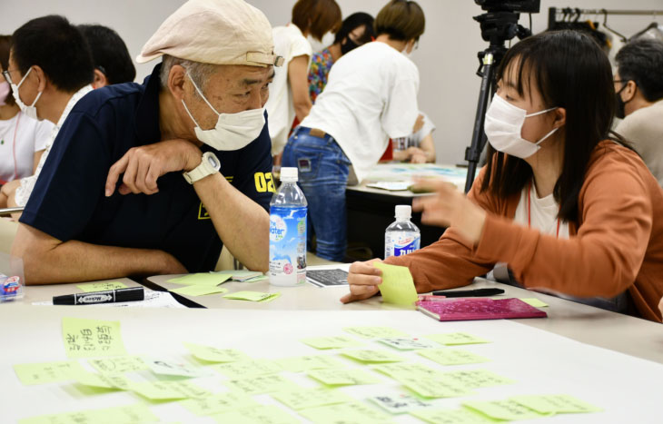

☆開催レポート☆
こんにちは！
真のごちゃまぜプロジェクトメンバーのハルコです◎
真のごちゃまぜプロジェクト第2回目となる講座編。
「真のごちゃまぜプロジェクト〜知ることからはじめようvol.2〜働きがい編」のレポートをお届けします◎
今回のゲストは、NPO法人ディーセントワーク・ラボ 代表の『中尾文香さん』！
障がい者雇用について教えてもらいました。
「真のごちゃまぜプロジェクト〜知ることからはじめようvol.2〜働きがい編」
〜タイムテーブル〜
10:20~ 受付開始
〈第一部〉
10:30~11:05 中尾さんによる講演
11:05~11:30 中尾さんとアークシップ代表 長谷川によるクロストーク
11:30~11:40 休憩
〈第二部〉
11:40~12:30 ワークショップ
12:40 終演
☆中尾さんによる講演☆
今回の中尾さんによる講演では、
“社会で活動している障がい者の方達のお話”から“障がい者就労の厳しい現状”、誰もが働きやすい環境・働きがいを感じる“ディーセントワーク”についてまでとてもわかりやすく説明していただきました。
“障がい”と聞くとマイナスのイメージを持つ方が多いと思います。
健常者と違ってできないことが多い。
仕事を一緒にするのは大変そう、、、。
でも、ちょっと考えてみると、、、
忘れ物が多い
目が合わせられない
自分の意見をすぐにはっきり伝えられない、、、など。
こういった人って結構多くいますよね。
かくいう私も、忘れ物が多かったり、自分の意見をすぐにはっきり伝えたりすることがとても苦手です。
実はこれも全部“障がい”なんだそうです！
そう、つまり私たちはみんな障がいを持って生きているのです！！
ただ、その障がいというランクの坂の経度が健常者と障がい者で違うだけ。
人によって向き不向きがあるようにできるできないの凸凹具合が激しいだけだったのです。
凸凹なんて、組み合わせちゃえば綺麗な形になります。
障がい者の人たちと一緒に働くと言うことに対して案外、
難しく考えすぎていただけなのかもなと思いました。
☆ワークショップ☆
中尾さんに講演していただいたあと、ワークショップを行いました。
お題はこの2つ。
- 5年後どういう社会になっていて欲しい？
- 1.を実現するために明日から何ができる？
４グループに分けてK J法を用いて意見を出し合いました◎
グループメンバーは、学生から60代の方、車椅子などの障がいを持つ方など様々。
出てくる意見が、またみな違った視線で捉えており、とても興味深いです！

なるほどね！
そんな考え方があったんだ！
などなど新たな発見が数多く出てきました(^ ^)
最後は各班のファシリテーターさんに発表してもらいました◎
☆アンケート結果から☆
イベント後に記載してもらったアンケート結果から、今回の講座で知ったことを簡単にまとめてみました◎
☆みんなが知ったこと☆
参加してくれたみなさまの今回の“知ったこと”をご紹介します！

ご協力ありがとうございました(^o^)/
☆最後に☆
今回も満員御礼と言うことで、たくさんの方にご参加していただき
とても嬉しく思います！
参加してくださったみなさま、ありがとうございました(^o^)!!
次回のイベントは、、、
7/4(日) できることからやってみようvol.2 餃子パーティー編
7/19(土) 知ることからはじめようvol.3 車椅子でパワフル編
みなさまのご参加お待ちしております◎